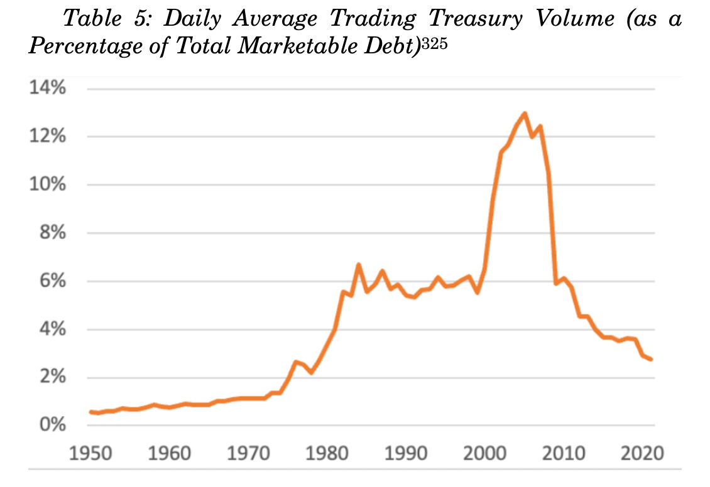
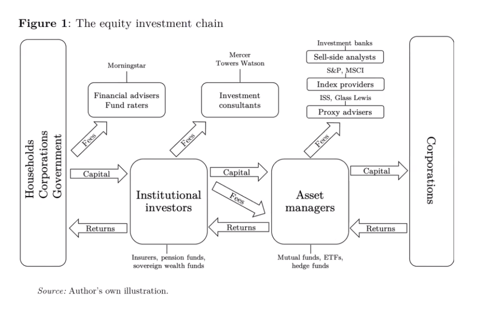
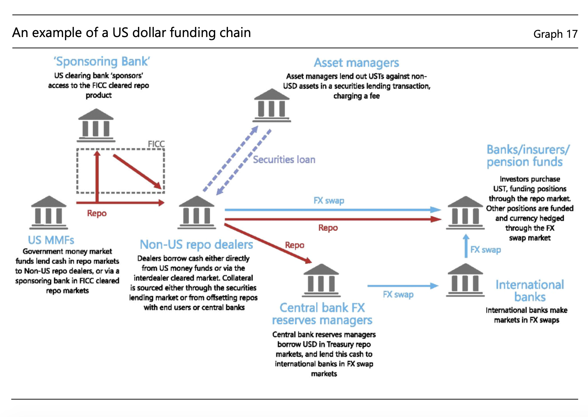

5 Financial System
We have a financial system that systematically generates risks and we have not created the safety nets that would contain that risk and make it more manageable. Tooze (2022) Recession risk in a world in the grip of the global dollar cycle
5.1 Treasuries
Tooze
The ability of investors to sell Treasuries quickly, cheaply, and at scale has led to an assumption, in many places enshrined in law, that Treasuries are nearly equivalent to cash. Yet in recent years Treasury market liquidity has evaporated on several occasions and, in 2020, the market’s near collapse led to the most aggressive central bank intervention in history. … a high degree of convertibility between Treasuries and cash generally requires intermediaries that can augment the money supply, absorbing sales by expanding their balance sheets on both sides. The historical depth of the Treasury market was in large part the result of a concerted effort by policymakers to nurture and support such balance sheet capacity at a collection of non bankbroker-dealers. In 2008, the ability of these intermediaries to augment the money supply became impaired as investors lost confidence in their money-like liabilities (known as repos). Subsequent changes to market structure pushed substantial Treasury dealing further beyond the bank regulatory perimeter, leaving public finance increasingly dependent on high-frequency traders and hedge funds—“shadow dealers.” The near money issued by these intermediaries proved highly unstable in 2020. Policy makers are now focused on reforming Treasury market structure so that Treasuries remain the world’s most liquid asset class. Successful reform likely requires a legal framework that, among other things, supports elastic intermediation capacity through balance sheets thatcan expand and contract as needed to meet market needs.”
This is the abstract for an essay modestly entitled “Money and public debt: Treasury Market Liquidity as a Legal Phenomenon” - the latest block buster collaboration from Lev Menand of Columbia University and Josh Younger (ex of JP Morgan now NY Fed) - in the Columbia Business Law Review.
My aim here is to amplify their crucial arguments. Everyone interested in global finance should read the article.
American public finance has long been closely intertwined with the American monetary framework and that deep and liquid Treasury markets are, in large part, a legal phenomenon. Treasury market liquidity, in other words, did not arise organically as a product primarily of private ordering. Instead, it was actively constructed by government officials. The high degree of convertibility between Treasury securities and cash—the market’s “liquidity”—depends upon entities that can create new, money-like claims to buy Treasuries. Sometimes the government’s central bank has issued these claims directly, as in March 2020; other times these claims were issued by central bank-backed instrumentalities, such as banks and select broker-dealers.
They connect here to three important strands of thinking about money and finance: the idea that the state money-finances its spending (MMT/Tankus et al), the political economy of financial markets (Braun, Gabor et al), the legal construction of finance (Pistor et al).
The key point is that the issuance of public debt goes in hand with the issuance of credit and money in a public-private partnership.
United States has never relied exclusively, or even primarily, on money instruments issued directly by government agencies. Instead, since the Founding, the government has outsourced money augmentation. By design, investor-owned enterprises—typically, chartered banks—have been the predominant money issuers in the economy. And the federal government, recognizing this, has set terms and conditions for their money creation.
Between 1863 and 1916, Congress established a network of investor-owned federal corporations—national banks—to serve as the country’s primary money-issuing institutions and required that these instrumentalities back their paper notes with Treasuries. … In doing so, the federal government conjured captive demand for federal debt. Although, under the resulting legal regime, the government formally borrowed to manage deficits, it borrowed in significant part by selling Treasuries to national banks, which, in turn, funded their purchases with newly issued notes and deposits.
When the U.S. joined the Allied effort in World War II, the Fed went even further. It bought large quantities of Treasuries directly and administered prices for Treasury debt, pegging short-and-long-term Treasury rates using its own balance sheet — monetary finance.
Up to the mid-century, secondary markets for already-issued government debt, what we think of today as the “bond market”, did not play a major role in the US monetary and fiscal nexus. In the 1950s this changed, with a deliberate policy decision to shift conduits of Treasury financing away from bank balance sheets attached to the Fed and instead to place Treasuries, through the capital markets (where bonds are bought and sold daily) with a much wider array of investors. This decision was motivated by the realization that a system for absorbing Treasuries based on bank balance sheets, left the banking system “clogged up” and inelastic. Before 1914 almost two thirds of America’s very limited public debt was held by banks. By the early 2000s banks held a tiny fraction of a gigantic debt pile. It was the Fed that was key to enabling the vast bulk of US Treasuries to be held outside the US banking system, through a new set of relationships with participants in capital markets.
As a major hiccup in 1953 revealed, for a large and dynamic market in Treasuries to be other than dysfunctional, it needed backstops and this required “creative lawyering and ongoing government support”. And so, to help stabilize the new market for Treasuries, the Fed set about developing and supporting the sale-and-repurchase agreement, or “repo.”
Repo
A repo is economically equivalent to a secured loan but structured as a sale of a bond combined with an agreement to repurchase that bond at an adjusted price on a date specified in advance. When the first and second transaction in a repo are spaced a day apart (and made exempt from the bankruptcy process), repos function (in certain respects) like bank deposits. Dealer firms, therefore, could conduct overnight repo transactions primarily with nonbank corporate “depositors,” effectively money-financing their operations.
The new role of the Fed as manager of the capital market-Treasury funding mechanism rather than the bank-based-Treasury funding mechanism, was to backstop the repo market. The Fed did not indiscriminately extend this support to all comers but instead designated an inside group of “primary dealers”. Initially there were 18 primary designated in 1960. The number grew to 46 by 1988 before declining to 21 in 2007. These were not high street banks benefiting from deposit insurance and intensive regulation, but market-facing investment banks - both US and foreign - and bond dealerships. Their access to Fed repos meant they could build a deep and liquid market for end-investors to buy Treasuries in the safe knowledge that they could always be repoed for cash with the primary dealers, with the Fed acting as the guarantor of the final link in the chain.
Developed with active Fed backing and defended against obstructive regulatory changes - crucially to exclude repoed collateral from any bankrupty proceedings - the repo system expanded “from roughly $2 billion in the early 1960s, to $12 billion in the late 1970s, to more than $300 billion in the mid-1980s.” From there it continued to progress.
The Fed-backed, primary dealer-managed Treasury market, operating on the basis of repos, was the anchor not just of America’s financial system, but that of the entire capitalist economic world.

By the early 2000s, with private bonds, and large packages of mortgage-backed debt entering the system, the repo market was churning many trillions of dollars in credit per day. In 2007 daily turnover reached a remarkable 13% of total marketable Treasury debt. And the primary dealers were operating with leverage of 47x their capital base. Despite the huge volumes and the hair-trigger responses of a market that was in effect offering trillions of dollars in overnight finance, the risks seemed manageable because, in the last instance, a primary dealer could always access the Fed backstop for their Treasury portfolio.
It was this system that imploded in 2008, with huge “runs on repo” the most famous victim of which was Lehman.
Through massive liquidity provision the Fed prevented a total collapse. But, though this forestalled an implosion, the pre-2008 structure did not survive. The elite group of primary dealers were shaken to their foundations and over the coming years, they either folded (Lehman) or were bought out and absorbed by bigger banks (Bear Stearns by J.P. Morgan Chase, Merrill Lynch by Bank of America), or formed their own bank holding companies (Goldman Sachs and Morgan Stanley), thus coming under the protection of deposit insurance and comprehensive bank supervision.
To reduce the risk of a systemically important mega-bank getting into serious trouble, these regulations were designed to dissuade big banks (which now controlled the primary dealers in Treasuries) from engaging in very high volume, highly leveraged, low margin business, like running large repo books. This reduced the elasticity of the Treasury markets. The growth in the new non-bank “shadow dealers” kept the market functioning, but from 2017 onwards pressures increased.
Public debt in private hands increased by $2.7 trillion from 2017 to 2019. At the same time, the Fed was unwinding its QE purchases and America’s big banks had no appetite to expand their holdings of Treasuries. Increasingly, the Treasury market migrated back towards lightly regulated non-bank players.
Into the place of the old primary dealers stepped so-called principal trading firms (PTFs) and other high-frequency traders (HFTs) that earned margins on trade matching. At the same time hedge funds devised new strategies that incentivized them to hold long positions, effectively functioning as inventory managers for the market. Hedge funds gobbled up whatever balance sheet capacity was offered to them by the big banks, for fearing of losing their “allocation”.
The result was a build up of Treasury holdings in the hands of lightly regulated but highly leveraged balance sheets. It was this fragile patchwork of bank and non-bank actors in the US Treasury market that imploded in March 2020 under the impact of the COVID shock.
Under massive stress, the basic legal, financial and, ultimately, political structure that underpins the interlinked public and private system of money and public debt was starkly revealed: The day was saved only by a dramatic intervention by the Fed, which used its balance sheet to absorb supply and smooth out price fluctuations. It was what Chairman Martin (chairman of the Fed between 1951 and 1970) had aimed to avoid: direct central bank intervention undergirding federal finance.
Our modern monetary and fiscal constitution profoundly entangles the state and the private financial system and it is the central bank that forms the ultimate backstop.
We are entering a critical phase in the financial history of the U.S. and the dollar. The trajectory of mandatory federal spending points to a secular widening of deficits over the medium-to long-term. Ensuring markets keep pace with that growth remains, as Chairman Martin observed back in 1959, “obviously needed for the functioning of our financial mechanism.” Absent reform, one possibility is another panic.
5.2 Financial Dominance
„Financial Dominance“ - interest hikes are less likely out of fear of financial instability even if needed to fight inflation.
Smith
Central banks live in terror of losing their credibility. If people believe that a central bank isn’t willing to do whatever it takes to keep prices from spiraling out of control, then they’ll raise their prices, because they think everyone else is going to raise their prices, and the central bank won’t act to stop the madness. So then when the central bank finally decides that enough is enough, it has to raise rates far more — and cause far more damage to the economy — just to convince everyone that things have changed and the hawks are once more in control.
This puts the Fed on the horns of a dilemma. If it keeps raising rates, more things will break in the financial system. Bank balance sheets will get weaker, putting them in more danger of bank runs like the one that just happened to SVB. But if the Fed pauses its rate hikes or cuts rates to ease the pain in the banking world, it runs the risk of losing its credibility and letting inflation go out of control, necessitating even bigger rate hikes and even more pain in a few years.
This is just the normal inflation-unemployment tradeoff, but with a financial angle thrown in. Bank weakness is bad because it causes banks to pull back lending, thus reducing growth and employment. Bank failures are bad for the same reason, only more so. But banks also have a lot of political clout, and banking panics are seen as huge public relations disasters for the government — as are bailouts, when those become necessary to stop a panic.
We might call this situation “financial dominance” (echoing the term “fiscal dominance”, which is when the central bank can’t raise rates because it’s afraid of making it hard for the government to pay the interest on its debt). Some economists think financial dominance is already making the Fed slow down its rate hikes.
Smith (2023) SVB and the Fed Charting a course between inflation and bank failures
Brunnermeier
When a crisis hits, it is necessary that some economic entity within a society absorb the shock. Owing to its economic and regulatory power, it is believed that a government is able, at least partially, to decide which entity will take on the losses. For example, it may inflate its debt away or default on it to pursue fiscal stimulus, and bail out specific sectors or economic entities. The financial sector is naturally one such entity: for example, the government may toughen foreclosure laws or soften private bankruptcy laws in order to push losses from households onto the financial sector – which could be fair, given that parts of the financial sector’s revenues are earned because of its role as an insurer.
Ex-ante, the government cannot commit not to redistribute across the different economic entities of the economy (financial sector, households, nominal savers, etc.). How it redistributes depends on how this affects the aggregate state of the economy, and the sectors with the least side-effects/amplification will usually be taking the hit, while the others might be bailed out. Losses, especially to an undercapitalized financial sector, can be dramatically amplified and spill over to the real economy. Hence, as we have seen in the recent financial crisis, the financial sector is usually one of the sectors onto which losses are not pushed; rather, it is the sector that is directly or indirectly bailed out.
The financial sector positions itself to anticipate this mechanism, and this is the essence of financial dominance. Because it can detect crashes and reallocate its resources faster than many other entities, the financial sector will make sure it is weak – e.g. it will become very levered, refuse to issue sufficient amounts of equity, and hence decrease its loss-absorption capacity – in order to avoid bearing losses on its own. For that matter, it can put itself in a position close to where amplification mechanisms and hence downward spirals are likely, should it lose more, forcing authorities to avoid financial repression and even to bail out some of the weakest banks assumed to be suffering from severe liquidity, or even solvency problems. Just before and at the peak of the financial crisis, therefore, the financial sector took unreasonably risky positions while continuing to pay large amounts of dividends instead of raising its equity cushion in anticipation of potential losses. Hence, highly levered and sensible to shocks, the financial sector almost completely collapsed when the crisis actually hit. In a sense, the financial sector follows the motto “being weak is your strength”.
The financial sector, through the forces of competition, easily makes strategic moves to ensure that losses cannot be pushed onto it.
Ex-post the shock, this behavior forces the relevant authorities not only to refrain from pushing losses onto the financial sector, but even to bail it out, for not doing so would make matters worse due to the amplification channel. Both fiscal and monetary authorities are typically involved in the subsequent bailouts. Fiscal policy (i) extends government guarantees and (ii) undertakes direct recapitalization through equity injections. Indeed, after the crisis, we saw national entities often coming to the rescue of their national banks (or playing an important role in it), with Ireland being a primary example. Monetary policy actions are similarly important in recapitalizing banks. Conventional interest rate cuts lower banks’ funding costs and affect asset prices. Subsequent sizable asset purchase programs lifted these assets off the banks’ balance sheets at favorable prices. This implicit or “stealth” recapitalization of the financial sector (see Brunnermeier and Sannikov, (2015) is one of the transmission mechanisms of monetary policy and can lead to an overall improved economic outcome. In other words, redistribution is not a zero-sum game and can under certain circumstances make all the agents in the economy better off. Note that this redistribution mechanism of monetary policy transmission is conceptually quite distinct from the standard consumption-demand management transmission emphasized in the Keynesian literature. In standard representative-agent New Keynesian economies, monetary policy works through the substitution effects induced by interest rate changes.
Fiscal and monetary policymakers can essentially be cornered to bail out the financial sector
5.3 Credit
Ryan-Collins
Credit drives Housing Prices
One of the most remarkable, but neglected, macroeconomic shifts in the past 50 years has been the transformation of banking systems in advanced economies from their textbook role of lending to non-financial firms for working capital and investment to becoming real estate lenders ( Jordà et al. 2017). Mortgage lending in advanced economies increased on average from 40 percent of GDP in the mid-1990s to almost 70 percent by the finan- cial crisis of 2007–2008, whilst the stock of business loans rose by little more than 5 percent ( Jordà et al. 2017). During the same period, average real house prices followed a path similar to that taken by mortgage credit, doubling in value, suggesting credit was the primary driver of rising prices.
Ryan-Collins (2021) Private Landed Property and Finance: A Checkered History (pdf)
5.4 Asset Manager Capitalism
Asset manager capitalism is a structure of power. It is interwoven with policy. It has expanded at the same time as central bank asset purchases (QE) have become the key tool of macro-policy. It is expanding the frontiers of financialization into every area of life. Asset managers need yield. They get yield by financializing everything from real estate to natural capital. And this is capitalism. It is interwoven with social structure, inequality and class.
Braun
The political economy literature explains financialization in the United States as the result of policymakers – for reasons specific to the American political economy between the late 1960s and early 1980s – turning to financial markets to solve problems of governability and profitability. My argument, although compatible with this conjunctural explanation, instead emphasizes the macroeconomic – and historically recurring – process of wealth accumulation as an underlying, structural cause.
The puzzle that arises from this argument: the strange non-death of the rentier in an era of financial capital abundance. Keynes predicted that once the resource the financial sector controls became abundant, the “cumulative oppressive power of the capitalist to exploit the scarcity-value of capital” would decline. Recent economic history has borne out the first part of Keynes’ prediction, but not the second: Finance capital has become abundant, but the rentier has returned to “rude health”
As per Piketty, the best measure of this health is the gap between the rate of return on capital (r) and the rate of economic growth (g). Subsequent work has shown this gap to have proven remarkably resilient in recent decades.
My central proposition is that whereas capital scarcity increases the exit-based structural power of finance, capital abundance strengthens the ownership- and control-based structural power of finance.
The asset management sector comprises, first and foremost, mutual funds and exchange-traded funds, as well as the less regulated and more leveraged institutions, namely hedge funds, private equity funds, and venture capital funds. 8 Although the distinction tends to get blurry in practice, there is a fundamental difference between institutional investors that are asset owners, and asset managers that are pure intermediaries in the business of managing other people’s money for a fee-
The asset management sector has seen exceptional growth over the past half century. What is more, since the global financial crisis of 2008 most global banks have greatly expanded their asset management arms, as have many insurers. On the list of the world’s top-10 asset managers, the “Big-Three” asset managers (BlackRock, Vanguard, and State Street Global Advisors) are closely followed by the asset management arms of Goldman Sachs, Allianz, and the like.
The assets of investment funds started to rise steeply in the 1980s and especially the 1990s, and today stand at twice the level of bank assets loans. The growth of institutional capital pools in general, and the concentration of the asset management sector in particular, have fundamentally reshaped financial markets and the structure of financial asset ownership.
share ownership concentration, believed to be an anachronism belonging to the finance capital era, made a comeback through the backdoor of the retirement-asset fueled lengthening of the investment chain. As a result of this “Great Re-concentration”, the United States is no longer the dispersed ownership society that scholars across disciplines and across generations – from Berle and Means, to Jensen and Meckling, to Hall and Soskice – took for granted.
Large, voice-affording stakes and full diversification ceased to be mutually exclusive; while liquidity – and thus the exit option – had evaporated. This combination makes asset manager capitalism historically unique, and the implications for the structural power of wealth owners and their financial intermediaries are by no means straightforward.
In their quest for scale, large asset managers have essentially relinquished the option to exit individual investments. This is a consequence, first, of the size of their stakes in individual companies – which even in a liquid market cannot be sold without causing a major drop in the share price. Second, the loss of exit is a feature of the index-tracking investment strategies pursued by the majority of funds offered by the Big-Three asset managers. The existing theoretical framework would predict the structural power of large asset managers to be weakened by this loss.
The loss of the exit option is compensated, however, by the increase in voice. One source of asset manager voice is the brute voting power that comes with large shareholdings. Their voting power makes the large index-tracking asset managers key allies for hedge funds, which routinely seek the support of the Big Three for their activist campaigns.
The second source of asset manager voice is diversification. The Big Three have promoted the narrative that their fully diversified (“universal”) shareholdings make them the quintessential long-term shareholders, whose interests are aligned with environmental, social, and governance (ESG) objectives.
Whether asset managers actually wield their structural power, and in whose interest, remains an open question. If the logic of universal ownership is compelling in theory, in practice it is counteracted by a host of “agency problems”, ranging from the cost of exercising voice to the cost of alienating the corporate managers who control the allocation of retirement plan assets to competing asset managers.
Asset managers’ dominant role in capital markets affords them infrastructural power vis-a-vis fiscal and monetary authorities. Hiring BlackRock to support their market operations has become routine for central banks around the world.
Asset managers’ overriding preference is for welfare state policies that increase private household savings and, crucially, for macroeconomic policies that sustain high asset prices. This shift in financial-sector preferences has far-reaching implications for the political economy of macroeconomic policy.
Braun (2021) Asset Manager Capitalism (pdf)
Tooze
We live in a remarkable world. As of July 20 2021, three asset managers, BlackRock, Vanguard Group and State Street Corp. collectively owned about 22% of the average S&P 500 company, according to data compiled by Bloomberg, up from 13.5% in 2008.
On Benjamin Braun:
INVESTMENT is about wealth preservation NOT productivity enhancement!
Financial capital has become abundant in the global economy. The logic of supply and demand would suggest that wealth owners and their financial intermediaries should see their structural power decline. Paradoxically, the ultimate gauge of rentier power – the gap between the rate of return on capital (r) and the rate of economic growth (g) – has proven remarkably resilient since the 1980s. Why did this gap not shrink? The guiding hypothesis of this project is that the power of wealth owners is partly a function of the organization of finance. The project studies the rise of different types of asset managers – firms that pool and manage “other people’s money” – and their impact on the economic and political determinants of the rate of return on capital.
Asset manager capitalism differs from early 20th-century “finance capital” because unlike the banks studied by Hilferding, today’s asset management giants combine control with diversification.

The key point to recognize is how asset managers earn their money. It isn’t through the returns of the corporations they invest in, but through the fees paid to them by institutional investors who aggregate the funds of households, corporations, governments etc. Those fees, of course, will ultimately only roll in if the asset managers earn good returns. But, if you stripped this down, the households could ultimately own the assets themselves. Adding the intermediation, advice, expertise, reduction of complexity etc etc is the key to the entire business.
Asset managers are mediated owners. They are mediated also as a result of the sheer size of their portfolios. They are radically diversified, owning slices of practically every corporation worth anything. But their bulk means that their ability to exit stock is limited. They are simply too big.
Like a robber baron, BlackRock has achieved a high concentration of ownership. Unlike a robber baron it has a huge diversification of what it owns and a limited interest in any particular bit of its portfolio. This somewhat paradoxical state of being into everything and unable to get out, gives rise to the idea that asset managers are what is called “universal owners”.
Not only do institutional investors own a majority of the public equity of the world, but through that ownership, their success as investors is dependent on the performance of the economy at large. Large owners who own a representative “slice” of the economy are more dependent on general macroeconomic performance than on the performance of any one stock or portfolio.
What BlackRock wants is exorbitant. It wants the public balance sheet to step in backstop any risks that asset managers might be running (in making serious ESG investments.)
And because BlackRock is a huge universal owner, when it asks for a public backstop it means the public balance sheet of the world - no kidding!
It is almost as though someone at BlackRock has been reading the Communist Manifesto and is asking themselves: Where is that “committee for managing the common affairs of the whole bourgeoisie” that we were promised? And no, a 1990s-style ad hoc combo of Greenspan-Summers-Rubin won’t do the trick. Universal owner → universal public backstop please!
The fundamental different political economy produced when government conceives its role as being essentially to derisk investment by gigantic private asset managers.
Focusing on 2008 encapsulates the shift from a bank-centered financial model to the rise of asset management. In 2008-9, banks were discredited by the crisis and literally began to cannibalize themselves to survive.
Asset manager capitalism is a structure of power. It is interwoven with policy. It has expanded at the same time as central bank asset purchases (QE) have become the key tool of macro-policy. It is expanding the frontiers of financialization into every area of life. Asset managers need yield. They get yield by financializing everything from real estate to natural capital. And this is capitalism. It is interwoven with social structure, inequality and class.
Tooze (2022) The Rise of Asset manager Capitalism
Braun
Asset Manager Capitalism is a historically distinct corporate governance regime. Whereas the control-based dominance of finance capital during the early 20 th century was characterized by credit-debt relationships between banks and corporations, today asset managers’ equity holdings dominate; and whereas the shareholder capitalism of the late 20 th century was characterized by impatient investors wielding the threat of exit, the power of asset managers in corporate governance is based on their large and illiquid, yet fully diversified shareholdings. Recent evidence suggests that the structural power wielded by asset managers determines corporate governance outcomes on environmental and social issues, influences product market competition, and shifts the macroeconomic policy preferences of the financial sector.
5.5 US Dollar Funding - Global Credit Creation
Tooze
If you want to understand how credit is created globally, don’t start with the neoclassical fable of households savers and borrowers that sits at the heart of the Diamond and Dybvig model (And yes I do know that that does not exhaust D&D’s contribution and that run dynamics of the type they describe happen in market finance too!). If you want to understand the modern system, start with a diagram like this one, as recently drawn by a BIS team.

Borrowers and lenders of US dollars usually rely on intermediaries. A characteristic of international US dollar funding markets is that they may involve several layers of intermediation that give rise to long and complex funding chains and result in significant interconnectedness for the financial system, more than in most domestic markets.
Tooze (2022) Chartbook #160 Kindleberger, Mehrling and that Nobel Prize
5.6 Career Hubs
Bühlmann Abstract
In this contribution, we introduce ‘career hubs’ as an alternative to interlocking directorates and propose to study transnational corporate elite networks with this new concept. Career hubs, the most frequent common career organizations, put emphasis on knowledge brokering and allow us to study a larger variety of organizations to understand the form and the spread of elite networks. We use a sample of 1366 firms on the Forbes 2000 list of 2018 and investigate the careers of 16,500 top executives by linking these data to the BoardEx database. We find three types of career hubs: global audit and consulting firms, financial firms participating in a transatlantic banking alliance and large US consumer goods conglomerates – and highlight the mechanisms through which they shape the spatial structures of finance led capitalism. In the conclusion, we consider the implication of our results for the literature on corporate networks and propose a series of future research avenues in the career hub perspective.
Bühlmann (2023) How career hubs shape the global corporate elite (paywall)